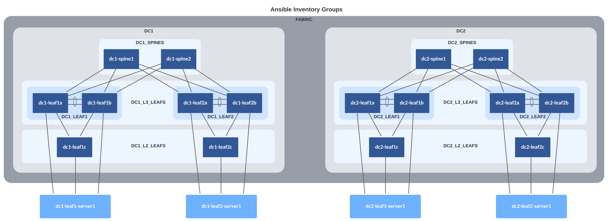

AVD example for a dual data center using L3LS¶
Introduction¶
This example is meant to be used as the logical evolution in AVD to new users. Therefore, this document follows the single data center structure and assumes the reader could deploy the scenario described in the section AVD example for a single data center using L3LS.
The main goal of this example is to provide a base scenario to enable the new users to grow in the number of DCs (Data Centers) and configure the interconnection between different DCs.
The example includes and describes all the AVD files and their content used to build an L3LS EVPN/VXLAN Symmetric IRB network covering two twin DCs. This design will use the EVPN DC GW feature to avoid unnecessary BGP overlay convergence. This feature rewrites EVPN routes on a set of devices (called EVPN Gateways) and shows the Gateways as the next hop for advertisements outside the EVPN domain using a DCI (DC Interconnect).
DC1¶
- Two (virtual) spine switches.
- Two sets of (virtual) leaf switches, serving endpoints such as servers.
- Two (virtual) layer2-only switches often used for management connectivity to the servers.
DC2¶
- Two (virtual) spine switches.
- Two sets of (virtual) leaf switches, serving endpoints such as servers.
- Two (virtual) layer2-only switches often used for management connectivity to the servers.
In order to follow the principle of network design using patterns, both DCs have the same layout to keep a repetitive pattern using the Leaf and Spine architecture.
There is, however, no hard requirement to have the exact same number of devices. For example, one DC could use 2 spines while the other could use 4 spines to comply with redundancy and bandwidth requirements.
Integration with CloudVision is not included in this example to keep everything as simple as possible. In this case, the Ansible host will communicate directly with the switches using eAPI.
Installation¶
Requirements to use this example:
- Follow the installation guide for AVD found here.
- Run the following playbook to copy the examples to your current working directory, for example
ansible-avd-examples:
ansible-playbook arista.avd.install_examples
This will show the following:
~/ansible-avd-examples# ansible-playbook arista.avd.install_examples
PLAY [Install Examples]***************************************************************************************************************************************************************************************************************************************************************
TASK [Copy all examples to ~/ansible-avd-examples]*****************************************************************************************************************************************************
changed: [localhost]
PLAY RECAP
****************************************************************************************************************************************************************************************************************************************************************************
localhost : ok=1 changed=1 unreachable=0 failed=0 skipped=0 rescued=0 ignored=0
After the playbook has run successfully, the directory structure will look as shown below, the contents of which will be covered in later sections:
ansible-avd-examples/ (or wherever the playbook was run)
|── dual-dc-l3ls
├── ansible.cfg
├── documentation
├── group_vars
├── images
├── intended
├── inventory.yml
├── playbook.yml
├── README.md
└── switch-basic-configurations
Info
If the content of any file is modified and the playbook is rerun, the file will not be overwritten. However, if any file in the example is deleted and the playbook is rerun, Ansible will re-create the file.
Overall design overview¶
Physical topology¶
The drawing below shows the physical topology used in this example. The interface assignment is identical to the single DC example. The only change introduced in this topology is the DCI links, which are connected to port Ethernet 6 in dc1-leaf2a/b to dc2-leaf2a/b:

IP ranges used¶
| Out-of-band management IP allocation for DC1 | 172.16.1.0/24 |
|---|---|
| Default gateway | 172.16.1.1 |
| dc1-spine1 | 172.16.1.11 |
| dc1-spine2 | 172.16.1.12 |
| dc1-leaf1a | 172.16.1.101 |
| dc1-leaf1b | 172.16.1.102 |
| dc1-leaf2a | 172.16.1.103 |
| dc1-leaf2b | 172.16.1.104 |
| dc1-leaf1c | 172.16.1.151 |
| dc1-leaf2c | 172.16.1.152 |
| dc2-spine1 | 172.16.2.21 |
| dc2-spine2 | 172.16.2.22 |
| dc2-leaf1a | 172.16.2.111 |
| dc2-leaf1b | 172.16.2.112 |
| dc2-leaf2a | 172.16.2.113 |
| dc2-leaf2b | 172.16.2.114 |
| dc2-leaf1c | 172.16.2.161 |
| dc2-leaf2c | 172.16.2.162 |
| Point-to-point links between leaf and spine | (Underlay) |
| DC1 | 10.255.255.0/26 |
| DC2 | 10.255.255.64/26 |
| Loopback0 interfaces used for EVPN peering | |
| DC1 | 10.255.0.0/27 |
| DC2 | 10.255.128.0/27 |
| Loopback1 interfaces used for VTEP | (Leaf switches) |
| DC1 | 10.255.1.0/27 |
| DC2 | 10.255.129.0/27 |
| VTEP Loopbacks used for diagnostics | (Leaf switches) |
| VRF10 - Common for both DCs | 10.255.10.0/27 |
| VRF11 - Common for both DCs | 10.255.11.0/27 |
| SVIs (interface vlan…) | 10.10.<VLAN-ID>.0/24 |
For example interface VLAN11 has the IP address: |
10.10.11.1 |
| MLAG Peer-link (interface vlan 4094) | (Leaf switches) |
| DC1 | 10.255.1.64/27 |
| DC2 | 10.255.129.64/27 |
| MLAG iBGP Peering (interface vlan 4093) | (Leaf switches) |
| DC1 | 10.255.1.96/27 |
| DC2 | 10.255.129.96/27 |
BGP design¶
New BGP connections are established from dc1-leaf2a and dc1-leaf2b to dc2-leaf2a and dc2-leaf2b respectively. In addition, all BGP learned routes are redistributed into the underlay. This allows for an easier troubleshooting, as all router IDs (Loopback0 IP addresses) and VTEPs (Loopback1 IP addresses) are reachable at a fabric level.
From the overlay perspective, each new leaf sees its peer in the twin DC as a new Route Server and will advertise all EVPN learned routes as they were directly connected to itself, making all changes inside its DC transparent to the twin DC.


Basic EOS config¶
As discussed in the single DC example, basic connectivity between the Ansible host and the switches must be established before Ansible can be used to push configurations. Remember, you must configure the following on all switches:
- A hostname configured purely for ease of understanding.
- An IP enabled interface - in this example the dedicated out-of-band management interface is used.
- A username and password with the proper access privileges.
Note
The folder dual-dc-l3ls/switch-basic-configurations/ contains a file per device for the initial configurations.
Ansible inventory, group vars and naming scheme¶
The following drawing shows a graphic overview of the Ansible inventory, group variables, and naming scheme used in this example:

Note
The two servers on DC1 (dc1-leaf1-server1 and dc1-leaf2-server1) and the two servers on DC2 (dc2-leaf1-server1 and dc2-leaf2-server1) at the bottom are not configured by AVD, but the switch ports used to connect to the servers are. For this reason, the diagram shows them outside of the FABRIC definition.
The same pattern used in the single DC example is followed:
- Group names use uppercase and underscore
- All hostnames use lowercase and dashes
The drawing also shows the relationships between groups and their children. Be aware that all declarations on a higher level are inherited by chidren automatically.
Content of the inventory.yml file¶
This section describes the entire ansible-avd-examples/dual-dc-l3ls/inventory.yml file used to represent the above topology.
In this example, we will consider that no DNS is available and define the IPs that the Ansible host has to reach per device.
---
# inventory.yml
all:
children:
FABRIC:
children:
DC1:
children:
DC1_SPINES:
hosts:
dc1-spine1:
ansible_host: 172.16.1.11
dc1-spine2:
ansible_host: 172.16.1.12
DC1_L3_LEAVES:
hosts:
dc1-leaf1a:
ansible_host: 172.16.1.101
dc1-leaf1b:
ansible_host: 172.16.1.102
dc1-leaf2a:
ansible_host: 172.16.1.103
dc1-leaf2b:
ansible_host: 172.16.1.104
DC1_L2_LEAVES:
hosts:
dc1-leaf1c:
ansible_host: 172.16.1.151
dc1-leaf2c:
ansible_host: 172.16.1.152
DC2:
children:
DC2_SPINES:
hosts:
dc2-spine1:
ansible_host: 172.16.1.21
dc2-spine2:
ansible_host: 172.16.1.22
DC2_L3_LEAVES:
hosts:
dc2-leaf1a:
ansible_host: 172.16.1.201
dc2-leaf1b:
ansible_host: 172.16.1.202
dc2-leaf2a:
ansible_host: 172.16.1.203
dc2-leaf2b:
ansible_host: 172.16.1.204
DC2_L2_LEAVES:
hosts:
dc2-leaf1c:
ansible_host: 172.16.1.251
dc2-leaf2c:
ansible_host: 172.16.1.252
NETWORK_SERVICES:
children:
DC1_L3_LEAVES:
DC1_L2_LEAVES:
DC2_L3_LEAVES:
DC2_L2_LEAVES:
CONNECTED_ENDPOINTS:
children:
DC1_L3_LEAVES:
DC1_L2_LEAVES:
DC2_L3_LEAVES:
DC2_L2_LEAVES:
Defining device types¶
As discussed in the single DC scenario, all device types must be explicitly defined. The device types are specified in the group variable files with the following names and content:
Setting fabric-wide configuration parameters¶
The ansible-avd-examples/dual-dc-l3ls/group_vars/FABRIC.yml file defines generic settings that apply to all children of the FABRIC group as specified in the inventory described earlier.
In this section, only additions to the previous example will be discussed. The only added change that must be inherited by both DCs is the L3 links between the L3 leaves, and it is represented at a fabric level using the following structure:
# L3 Edge port definitions. This can be any port in the entire Fabric, where IP interfaces are defined.
l3_edge:
# Define a new IP pool that will be used to asign IP addreses to L3 Edge interfaces.
p2p_links_ip_pools:
DCI_IP_pool: 172.100.100.0/24
# Define a new link profile which will match the IP pool, the used ASNs and include the defined interface into underlay routing
p2p_links_profiles:
DCI_profile:
ip_pool: DCI_IP_pool
as: [65102, 65202]
include_in_underlay_protocol: true
# Define each P2P L3 link and link the nodes, the interfaces and the profile used.
p2p_links:
- id: 1
nodes: [dc1-leaf2a, dc2-leaf2a]
interfaces: [Ethernet6, Ethernet6]
profile: DCI_profile
- id: 2
nodes: [dc1-leaf2b, dc2-leaf2b]
- Define a new IP Pool, with the name “DCI_IP_pool” which will use the prefix “172.100.100.0/24” to assign IP addresses.
- Define a new link profile, called “DCI_profile” which will use the previously created IP pool, the ASN will be “65102” for left devices and “65202” for right devices. And interfaces will be included in the underlay routing protocol.
- Define a new link, with the left and right node hostname defined in AVD, along with the interface and finally assign a profile containing all required information to configure the link.
Setting device specific configuration parameters¶
Both ansible-avd-examples/dual-dc-l3ls/group_vars/DC1.yml and ansible-avd-examples/dual-dc-l3ls/group_vars/DC2.yml files define settings that apply to all children of DC1 and DC2 groups as specified in the inventory described earlier.
In this section, we will discuss DC2 device definitions. From DC1 only the changes will be discussed, as definitions are the same as in the single DC L3LS example. The only change, the one used to include the EVPN DC GW, will be discussed later.
By changing only DC2.yml file, the defined settings are limited to DC2. In this example, DC2 follows the same configuration as DC1, but it could be totally different, keeping the DC1 definition intact while DC2 can be adjusted to meet different requirements.
---
mgmt_gateway: 172.16.2.1 # (1)!
spine:
defaults:
platform: vEOS-lab # (2)!
loopback_ipv4_pool: 10.255.128.0/27 # (3)!
bgp_as: 65200 # (4)!
bgp_defaults: # (5)!
- no bgp default ipv4-unicast
- distance bgp 20 200 200
- graceful-restart restart-time 300
- graceful-restart
nodes: # (6)!
dc2-spine1:
id: 11 # (7)!
mgmt_ip: 172.16.2.21/24 # (8)!
dc2-spine2:
id: 12
mgmt_ip: 172.16.2.22/24
- The default gateway for the management interface of all devices in DC2 is defined.
platformreferences default settings defined in AVD specific to certain switch platforms.loopback_ipv4_pooldefines the IP scope from which AVD assigns IPv4 addresses for Loopback0.bgp_asdefines the BGP AS number.bgp_defaultsdefines generic BGP settings.nodesdefines the actual spine switches, using the hostnames defined in the inventory.idis used to calculate the various IP addresses, for example, the IPv4 address for the Loopback0 interface. In this case, dc2-spine1 will get the IPv4 address 10.255.128.11/27 assigned to the Loopback0 interface.mgmt_ipdefines the IPv4 address of the management interface. As stated earlier, Ansible will perform name lookups using the hostnames specified in the inventory unless using theansible_hostoption. However, there is no automatic mechanism to grab the result of the name lookup and use that to generate the management interface configuration.
The following section covers the L3 leaf switches. Significantly more settings need to be set compared to the spine switches:
l3leaf:
defaults:
platform: vEOS-lab # (1)!
loopback_ipv4_pool: 10.255.128.0/27 # (2)!
loopback_ipv4_offset: 2 # (3)!
vtep_loopback_ipv4_pool: 10.255.129.0/27 # (4)!
uplink_interfaces: ['Ethernet1', 'Ethernet2'] # (5)!
uplink_switches: ['dc2-spine1', 'dc2-spine2'] # (6)!
uplink_ipv4_pool: 10.255.255.64/26 # (7)!
mlag_interfaces: ['Ethernet3', 'Ethernet4'] # (8)!
mlag_peer_ipv4_pool: 10.255.129.64/27 # (9)!
mlag_peer_l3_ipv4_pool: 10.255.129.96/27 # (10)!
bgp_defaults:
- no bgp default ipv4-unicast
- distance bgp 20 200 200
- graceful-restart restart-time 300
- graceful-restart
virtual_router_mac_address: 00:1c:73:00:00:99 # (11)!
spanning_tree_priority: 4096 # (12)!
spanning_tree_mode: mstp # (13)!
node_groups: # (14)!
DC2_L3_LEAF1:
bgp_as: 65201 # (15)!
nodes:
dc2-leaf1a:
id: 11
mgmt_ip: 172.16.2.201/24
uplink_switch_interfaces: # (16)!
- Ethernet1
- Ethernet1
dc2-leaf1b:
id: 12
mgmt_ip: 172.16.2.202/24
uplink_switch_interfaces:
- Ethernet2
- Ethernet2
DC2_L3_LEAF2:
bgp_as: 65202
evpn_gateway: # (17)!
evpn_l2:
enabled: true
evpn_l3:
enabled: true
inter_domain: true
nodes:
dc2-leaf2a:
id: 13
mgmt_ip: 172.16.2.203/24
uplink_switch_interfaces:
- Ethernet3
- Ethernet3
evpn_gateway:
remote_peers: # (18)!
- hostname: dc1-leaf2a
dc2-leaf2b:
id: 14
mgmt_ip: 172.16.2.204/24
uplink_switch_interfaces:
- Ethernet4
- Ethernet4
evpn_gateway:
remote_peers:
- hostname: dc1-leaf2b
platformreferences default settings defined in AVD specific to certain switch platforms.loopback_ipv4_pooldefines the IP scope from which AVD assigns IPv4 addresses for Loopback0. This IP pool is identical to the one used for the spine switches in this example. To avoid setting the same IP addresses for several devices, we define the optionloopback_ipv4_offset.loopback_ipv4_offsetoffsets all assigned loopback IP addresses counting from the beginning of the IP scope. This is required when the same IP pool is used for two different node_types (like spine and l3leaf in this example) to avoid overlapping IPs. For example, the offset is “2” in this case because each spine switch uses one loopback address.vtep_loopback_ipv4_pooldefines the IP scope from which AVD assigns IPv4 addresses for the VTEP (Loopback1).uplink_interfacesdefines the interfaces used locally on the leaf switches.uplink_switchesdefines the uplink switches, which are dc2-spine1 and dc2-spine2. Note that theuplink_interfacesanduplink_switchesare paired vertically.uplink_ipv4_pooldefines the IP scope from which AVD assigns IPv4 addresses for the uplink interfaces that were just defined.mlag_interfacesdefines the MLAG interfaces used on each leaf switch, in this case, Ethernet3 and Ethernet4. These two interfaces will form PortChannel3 used for the MLAG peer link. Note that PortChannel3 is selected since the first interface is Ethernet3.mlag_peer_ipv4_pooldefines the IP scope from which AVD assigns IPv4 addresses for the MLAG peer link interface VLAN4094.mlag_peer_l3_ipv4_pooldefines the IP scope from which AVD assigns IPv4 addresses for the iBGP peering established between the two leaf switches via the SVI/IRB interface VLAN4093.virtual_router_mac_addressdefines the MAC address used for the anycast gateway on the various subnets. This is the MAC address connected endpoints will learn when ARPing for their default gateway.spanning_tree_prioritysets the spanning tree priority. Since spanning tree in an L3LS network is effectively only running locally on the switch, the same priority across all L3 leaf switches can be re-used.spanning_tree_modedefines the spanning tree mode. In this case, we are using MSTP, which is the default. However, other modes are supported should they be required, for example, for connectivity to legacy or third-party vendor environments.node_groupsdefines settings common to more than one node. For example, for leaf switches, when exactly two nodes are part of a node group, AVD will, by default, automatically generate MLAG configuration.bgp_asis defined once since an MLAG pair shares a single BGP AS number.uplink_switch_interfacesdefines the interfaces used on the uplink switches (Ethernet1 on dc2-spine1 and dc2-spine2 in this example). Defining which spine interfaces the leaf is connected to under the leaf switch settings makes adding and removing leaf switches much easier. There is no need to add/remove any settings under the spine switch section; AVD takes care of that for you. This child device/parent device hierarchy also applies to L2 and L3 leaves.evpn_gatewayconfigures the EVPN DC GW features that will be inherited by the children of this group, in this case dc2-leaf2a and dc2-leaf2b.evpn_l2configures EVPN DC GW for EVPN type 2 routes (MAC-IP) whileevpn_l3configures the GW for EVPN type 5 routes (IP-PREFIX).remote_peersdefines the RS for EVPN DC GW that will be configured on the device. This is a unique definition per device, and using the hostname, AVD can get all the information from the device in order to generate the configuration: Router ID to peer and BGP AS.
Since we are adding the EVPN DC GW functionality in DC2, we need to also add it in DC1. This is a snipped part of ansible-avd-examples/dual-dc-l3ls/group_vars/DC1.yml file where the changes need to occur:
Important
The following is a snipped part of DC1.yml reflecting the changes needed compared to single DC L3LS example. The goal is to configure EVPN DC GW functionality.
- Ethernet2
DC1_L3_LEAF2:
bgp_as: 65102
evpn_gateway:
# Specific BGP EVPN Gateway functionality for route types 2 (MAC-IP), 3 (IMET) and 5 (IP-PREFIX) can be enabled separately as needed.
evpn_l2:
enabled: true
evpn_l3:
enabled: true
inter_domain: true
nodes:
dc1-leaf2a:
id: 3
mgmt_ip: 172.16.1.103/24
uplink_switch_interfaces:
- Ethernet3
- Ethernet3
evpn_gateway:
# Define remote peers of the EVPN VXLAN Gateway. If the hostname can be found in the inventory, ip_address and BGP ASN will be automatically populated. Manual override takes precedence. If the peer's hostname can not be found in the inventory, ip_address and bgp_as must be defined.
remote_peers:
- hostname: dc2-leaf2a
dc1-leaf2b:
id: 4
mgmt_ip: 172.16.1.104/24
uplink_switch_interfaces:
- Ethernet4
- Ethernet4
evpn_gateway:
# Define remote peers of the EVPN VXLAN Gateway. If the hostname can be found in the inventory, ip_address and BGP ASN will be automatically populated. Manual override takes precedence. If the peer's hostname can not be found in the inventory, ip_address and bgp_as must be defined.
Finally, the definition in DC2 for the L2 leaf switches:
# L2 Leaf switch group
l2leaf:
defaults:
platform: vEOS-lab
uplink_interfaces: ['Ethernet1', 'Ethernet2']
spanning_tree_mode: mstp
node_groups:
DC2_L2_LEAF1:
uplink_switches: ['dc2-leaf1a', 'dc2-leaf1b']
nodes:
dc2-leaf1c:
id: 11
mgmt_ip: 172.16.2.251/24
uplink_switch_interfaces:
- Ethernet8
- Ethernet8
DC2_L2_LEAF2:
uplink_switches: ['dc2-leaf2a', 'dc2-leaf2b']
nodes:
dc2-leaf2c:
id: 12
mgmt_ip: 172.16.2.252/24
uplink_switch_interfaces:
Specifying network services (VRFs and VLANs) in the EVPN/VXLAN fabric¶
This file is identical to the one provided in the previous example. VRFs and VLANs are configured on all devices since no tags or filter are being used.
It is important to consider adding the new leaves to the Inventory as described in the Inventory section, so they will rely on this file to configure the network services.
---
### group_vars/NETWORK_SERVICES.yml
tenants:
# Definition of tenants. Additional level of abstraction to VRFs
TENANT1:
# Number used to generate the VNI of each VLAN by adding the VLAN number in this tenant.
mac_vrf_vni_base: 10000
vrfs:
# VRF definitions inside the tenant.
VRF10:
# VRF VNI definition.
vrf_vni: 10
# Enable VTEP Network diagnostics
# This will create a loopback with virtual source-nat enable to perform diagnostics from the switch.
vtep_diagnostic:
# Loopback interface number
loopback: 10
# Loopback ip range, a unique ip is derived from this ranged and assigned
# to each l3 leaf based on it's unique id.
loopback_ip_range: 10.255.10.0/27
svis:
# SVI definitions.
"11":
# SVI Description
name: VRF10_VLAN11
enabled: true
# IP anycast gateway to be used in the SVI in every leaf.
ip_address_virtual: 10.10.11.1/24
"12":
name: VRF10_VLAN12
enabled: true
ip_address_virtual: 10.10.12.1/24
VRF11:
vrf_vni: 11
vtep_diagnostic:
loopback: 11
loopback_ip_range: 10.255.11.0/27
svis:
"21":
name: VRF11_VLAN21
enabled: true
ip_address_virtual: 10.10.21.1/24
"22":
name: VRF11_VLAN22
enabled: true
ip_address_virtual: 10.10.22.1/24
l2vlans:
# These are pure L2 vlans. They do not have a SVI defined in the l3leafs and they will be bridged inside the VXLAN fabric
"3401":
name: L2_VLAN3401
"3402":
name: L2_VLAN3402
Specifying endpoint connectivity in the EVPN/VXLAN fabric¶
After the previous section, all VRFs and VLANs across the fabric are now defined on each leaf node. The ansible-avd-examples/dual-dc-l3ls/group_vars/CONNECTED_ENDPOINTS.yml file specifies the connectivity for all endpoints in the fabric (typically servers):
---
### group_vars/CONNECTED_ENDPOINTS.yml
# Definition of connected endpoints in the fabric.
servers:
# Name of the defined server.
dc1-leaf1-server1:
# Definition of adapters on the server.
adapters:
# Name of the server interfaces that will be used in the description of each interface
- endpoint_ports: [ PCI1, PCI2 ]
# Device ports where the server ports are connected.
switch_ports: [ Ethernet5, Ethernet5 ]
# Device names where the server ports are connected.
switches: [ dc1-leaf1a, dc1-leaf1b ]
# VLANs that will be configured on these ports.
vlans: 11-12,21-22
# Native VLAN to be used on these ports.
native_vlan: 4092
# L2 mode of the port.
mode: trunk
# Spanning tree portfast configuration on this port.
spanning_tree_portfast: edge
# Definition of the pair of ports as port channel.
port_channel:
# Description of the port channel interface.
description: PortChannel dc1-leaf1-server1
# Port channel mode for LACP.
mode: active
- endpoint_ports: [ iLO ]
switch_ports: [ Ethernet5 ]
switches: [ dc1-leaf1c ]
vlans: 11
mode: access
spanning_tree_portfast: edge
dc1-leaf2-server1:
adapters:
- endpoint_ports: [ PCI1, PCI2 ]
switch_ports: [ Ethernet5, Ethernet5 ]
switches: [ dc1-leaf2a, dc1-leaf2b ]
vlans: 11-12,21-22
native_vlan: 4092
mode: trunk
spanning_tree_portfast: edge
port_channel:
description: PortChannel dc1-leaf2-server1
mode: active
- endpoint_ports: [ iLO ]
switch_ports: [ Ethernet5 ]
switches: [ dc1-leaf2c ]
vlans: 11
mode: access
spanning_tree_portfast: edge
# Start of definitions for DC2 (identical to DC1)
# Name of the defined server.
dc2-leaf1-server1:
# Definition of adapters on the server.
adapters:
# Name of the server interfaces that will be used in the description of each interface
- endpoint_ports: [ PCI1, PCI2 ]
# Device ports where the server ports are connected.
switch_ports: [ Ethernet5, Ethernet5 ]
# Device names where the server ports are connected.
switches: [ dc2-leaf1a, dc2-leaf1b ]
# VLANs that will be configured on these ports.
vlans: 11-12,21-22
# Native VLAN to be used on these ports.
native_vlan: 4092
# L2 mode of the port.
mode: trunk
# Spanning tree portfast configuration on this port.
spanning_tree_portfast: edge
# Definition of the pair of ports as port channel.
port_channel:
# Description of the port channel interface.
description: PortChannel dc2-leaf1-server1
# Port channel mode for LACP.
mode: active
- endpoint_ports: [ iLO ]
switch_ports: [ Ethernet5 ]
switches: [ dc2-leaf1c ]
vlans: 11
mode: access
spanning_tree_portfast: edge
dc2-leaf2-server1:
adapters:
- endpoint_ports: [ PCI1, PCI2 ]
switch_ports: [ Ethernet5, Ethernet5 ]
switches: [ dc2-leaf2a, dc2-leaf2b ]
vlans: 11-12,21-22
native_vlan: 4092
mode: trunk
spanning_tree_portfast: edge
port_channel:
description: PortChannel dc2-leaf2-server1
mode: active
- endpoint_ports: [ iLO ]
switch_ports: [ Ethernet5 ]
switches: [ dc2-leaf2c ]
vlans: 11
mode: access
spanning_tree_portfast: edge
The configuration of the endpoints in DC2 is identical to the ones in DC1. The only change resides in the name of the leaves used and their ports.
The playbook¶
The playbook is also the same, as the actions to execute in the fabric are the same. It is important to validate the hosts variable in the playbook to include all Ansible groups.
Testing AVD output without a lab¶
Example of using this playbook without devices (local tasks):
By simply commenting out (or deleting) the last task definition, the playbook will generate all of the output (variables, configurations, documentation), but will not attempt to communicate with any devices.
Please look through the folders and files described above to learn more about the output generated by AVD.
Executing the playbook¶
The execution of the playbook should produce the following output:
user@ubuntu:~/Documents/git_projects/ansible-avd-examples/dual-dc-l3ls$ ansible-playbook playbook.yml
PLAY [Run AVD] *****************************************************************************************************************************************************************************
TASK [arista.avd.eos_designs : Collection arista.avd version 3.5.0 loaded from /home/user/.ansible/collections/ansible_collections] ******************************************************
ok: [dc1-leaf1a]
TASK [arista.avd.eos_designs : Create required output directories if not present] **********************************************************************************************************
ok: [dc1-leaf1a -> localhost] => (item=/home/user/Documents/git_projects/ansible-avd-examples/dual-dc-l3ls/intended/structured_configs)
ok: [dc1-leaf1a -> localhost] => (item=/home/user/Documents/git_projects/ansible-avd-examples/dual-dc-l3ls/documentation/fabric)
(...)
If similar output is not shown, make sure:
- The documented requirements are met.
- The latest
arista.avdcollection is installed.
Troubleshooting¶
EVPN not working¶
If after doing the following steps:
- Manually copy/paste the switch-basic-configuration to the devices.
- Run the playbook and push the generated configuration to the fabric.
- Login to a leaf device, for example, dc1-leaf1a and run the command
show bgp evpn summaryto view EVPN routes.
The following error message is shown:
This is caused by AVD pushing the configuration line service routing protocols model multi-agent, which enables the multi-agent routing process supporting EVPN. This change requires a reboot of the device.